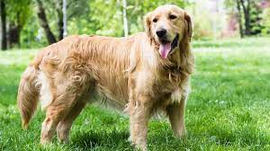

Sam fue abandonado en las afueras de noviciado sin ninguna vacuna o cuidado, tanto que fue encontrado con heridas que le proboco la caida de su pelaje en sus heridas. ¡¡Pero ahora ya recuperado de sus heridad y la recuperacion de su hermoso pelito, VEN Y ADOPTA A SAM QUE TE ESPERA CON UNA GRAN SONRISA Y CON MUCHAS GANAS DE JUGAR!!
| img | Nombre | Edad | Genero | Esterilizado | Nro.chip |
|---|---|---|---|---|---|
|  | Sam | 2 años | Macho | No | 56785678 |